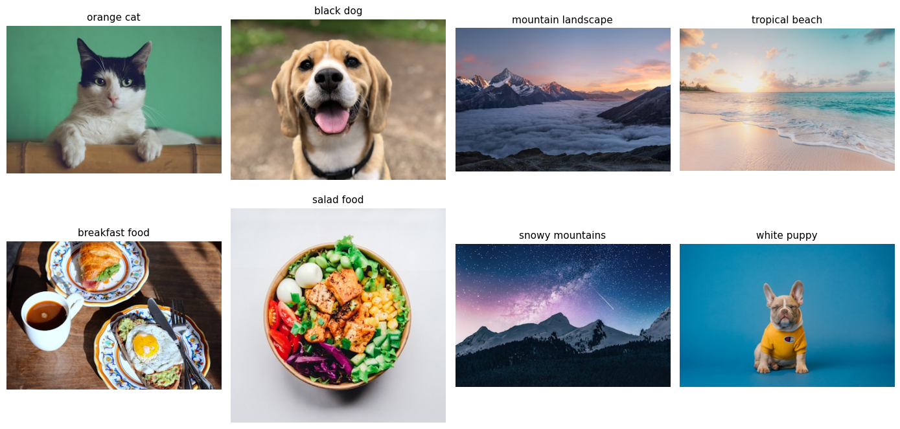
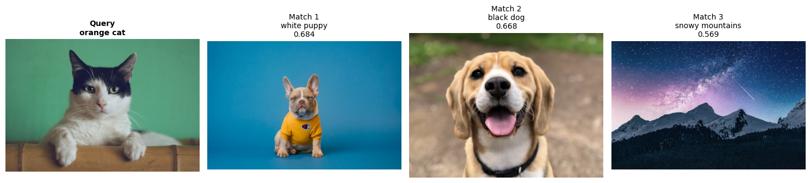

from sentence_transformers import SentenceTransformer
import numpy as np
import faiss
print("Imports ready!")Imports ready!Nipun Batra
October 7, 2025
Search by meaning, not keywords. Works for text AND images!
What you’ll build:
Let’s go!
docs = [
"Delhi air pollution levels spike due to brick kilns",
"AQI improving after monsoon rains in NCR region",
"New solar panel installations break records in India",
"Electric vehicle sales surge 40% this quarter",
"Forest fires in Amazon release massive carbon emissions",
"Arctic ice melting faster than predicted by models",
"Renewable energy now cheaper than coal in most markets",
"Delhi government announces odd-even traffic scheme"
]
print(f"{len(docs)} documents loaded")8 documents loaded# Load model
text_model = SentenceTransformer('all-MiniLM-L6-v2')
# Create embeddings
text_embeddings = text_model.encode(docs)
text_embeddings = np.array(text_embeddings).astype('float32')
print(f" Text embeddings: {text_embeddings.shape}")
print(f" Each doc → {text_embeddings.shape[1]}-dim vector") Text embeddings: (8, 384)
Each doc → 384-dim vector# 1. FAISS (fastest)
text_index = faiss.IndexFlatL2(text_embeddings.shape[1])
text_index.add(text_embeddings)
print(f" FAISS index: {text_index.ntotal} vectors")
# 2. Qdrant (production-ready)
try:
from qdrant_client import QdrantClient
from qdrant_client.models import Distance, VectorParams, PointStruct
qdrant = QdrantClient(":memory:")
qdrant.create_collection(
collection_name="docs",
vectors_config=VectorParams(size=text_embeddings.shape[1], distance=Distance.COSINE)
)
points = [
PointStruct(id=i, vector=emb.tolist(), payload={"text": doc})
for i, (emb, doc) in enumerate(zip(text_embeddings, docs))
]
qdrant.upsert(collection_name="docs", points=points)
print(f" Qdrant: {len(docs)} vectors")
qdrant_available = True
except ImportError:
print(" Qdrant not installed (optional)")
qdrant_available = False
# 3. NumPy (DIY)
def numpy_search(query_vec, embeddings_db, k=3):
query_norm = query_vec / np.linalg.norm(query_vec)
db_norm = embeddings_db / np.linalg.norm(embeddings_db, axis=1, keepdims=True)
similarities = db_norm @ query_norm
top_k = np.argsort(similarities)[::-1][:k]
return top_k, similarities[top_k]
print(" NumPy search ready") FAISS index: 8 vectors
Qdrant: 8 vectors
NumPy search readyUnified search function - choose your implementation!
def search_text(query, k=3, method="faiss"):
"""Search documents using different vector DB implementations."""
query_vec = text_model.encode([query])[0].astype('float32')
print(f"\nSearching: '{query}' ({method})\n" + "="*60)
if method == "faiss":
distances, indices = text_index.search(query_vec.reshape(1, -1), k)
for i, (idx, dist) in enumerate(zip(indices[0], distances[0]), 1):
print(f"{i}. {docs[idx]}")
print(f" Distance: {dist:.3f}\n")
elif method == "qdrant" and qdrant_available:
results = qdrant.query_points(
collection_name="docs",
query=query_vec.tolist(),
limit=k
)
for i, point in enumerate(results.points, 1):
print(f"{i}. {point.payload['text']}")
print(f" Score: {point.score:.3f}\n")
elif method == "numpy":
indices, similarities = numpy_search(query_vec, text_embeddings, k)
for i, (idx, sim) in enumerate(zip(indices, similarities), 1):
print(f"{i}. {docs[idx]}")
print(f" Similarity: {sim:.3f}\n")
else:
print(f"Method '{method}' not available")
🔍 'air quality in Delhi' (faiss)
============================================================
1. Delhi air pollution levels spike due to brick kilns
Distance: 0.706
2. AQI improving after monsoon rains in NCR region
Distance: 1.117
3. Delhi government announces odd-even traffic scheme
Distance: 1.321
🔍 'air quality in Delhi' (numpy)
============================================================
1. Delhi air pollution levels spike due to brick kilns
Similarity: 0.647
2. AQI improving after monsoon rains in NCR region
Similarity: 0.441
3. Delhi government announces odd-even traffic scheme
Similarity: 0.339
🔍 'climate change impacts' (qdrant)
============================================================
1. Forest fires in Amazon release massive carbon emissions
Score: 0.370
2. Arctic ice melting faster than predicted by models
Score: 0.339
3. AQI improving after monsoon rains in NCR region
Score: 0.269
🔍 'renewable energy and sustainability' (numpy)
============================================================
1. Renewable energy now cheaper than coal in most markets
Similarity: 0.608
2. New solar panel installations break records in India
Similarity: 0.249
3. Electric vehicle sales surge 40% this quarter
Similarity: 0.194
Now the fun part - search images with text OR other images!
from PIL import Image
import requests
from io import BytesIO
import matplotlib.pyplot as plt
from transformers import CLIPProcessor, CLIPModel
# Load CLIP (works for both images AND text!)
clip_model = CLIPModel.from_pretrained("openai/clip-vit-base-patch32")
clip_processor = CLIPProcessor.from_pretrained("openai/clip-vit-base-patch32")
print(" CLIP model loaded!")Using a slow image processor as `use_fast` is unset and a slow processor was saved with this model. `use_fast=True` will be the default behavior in v4.52, even if the model was saved with a slow processor. This will result in minor differences in outputs. You'll still be able to use a slow processor with `use_fast=False`. CLIP model loaded!# Small image dataset from Unsplash
image_data = [
{"url": "https://images.unsplash.com/photo-1514888286974-6c03e2ca1dba?w=400", "desc": "orange cat"},
{"url": "https://images.unsplash.com/photo-1543466835-00a7907e9de1?w=400", "desc": "black dog"},
{"url": "https://images.unsplash.com/photo-1506905925346-21bda4d32df4?w=400", "desc": "mountain landscape"},
{"url": "https://images.unsplash.com/photo-1507525428034-b723cf961d3e?w=400", "desc": "tropical beach"},
{"url": "https://images.unsplash.com/photo-1551963831-b3b1ca40c98e?w=400", "desc": "breakfast food"},
{"url": "https://images.unsplash.com/photo-1546069901-ba9599a7e63c?w=400", "desc": "salad food"},
{"url": "https://images.unsplash.com/photo-1519681393784-d120267933ba?w=400", "desc": "snowy mountains"},
{"url": "https://images.unsplash.com/photo-1583511655857-d19b40a7a54e?w=400", "desc": "white puppy"},
]
# Download
images = []
image_descriptions = []
for item in image_data:
response = requests.get(item["url"])
img = Image.open(BytesIO(response.content)).convert('RGB')
images.append(img)
image_descriptions.append(item["desc"])
print(f" {len(images)} images loaded\n")
# Display
fig, axes = plt.subplots(2, 4, figsize=(14, 7))
for idx, (img, desc) in enumerate(zip(images, image_descriptions)):
ax = axes[idx // 4, idx % 4]
ax.imshow(img)
ax.set_title(desc, fontsize=11)
ax.axis('off')
plt.tight_layout()
plt.show() 8 images loaded

def get_image_embedding(image):
inputs = clip_processor(images=image, return_tensors="pt")
image_features = clip_model.get_image_features(**inputs)
embedding = image_features.detach().numpy()[0]
return embedding / np.linalg.norm(embedding) # normalize
# Generate embeddings
image_embeddings = np.array([get_image_embedding(img) for img in images]).astype('float32')
print(f" Image embeddings: {image_embeddings.shape}")
print(f" Each image → {image_embeddings.shape[1]}-dim vector") Image embeddings: (8, 512)
Each image → 512-dim vectorCLIP’s magic: same embedding space for text AND images!
def search_images_by_text(query, k=3):
# Convert text to embedding
inputs = clip_processor(text=query, return_tensors="pt")
text_features = clip_model.get_text_features(**inputs)
query_vec = text_features.detach().numpy()[0]
query_vec = query_vec / np.linalg.norm(query_vec)
# Search
similarities, indices = image_index.search(query_vec.reshape(1, -1).astype('float32'), k)
# Display
print(f"\n '{query}'\n")
fig, axes = plt.subplots(1, k, figsize=(12, 4))
for i, (idx, sim) in enumerate(zip(indices[0], similarities[0])):
ax = axes[i] if k > 1 else axes
ax.imshow(images[idx])
ax.set_title(f"{image_descriptions[idx]}\nScore: {sim:.3f}", fontsize=10)
ax.axis('off')
plt.tight_layout()
plt.show()Find similar images using another image as query!
def search_images_by_image(query_idx, k=3):
query_vec = image_embeddings[query_idx]
similarities, indices = image_index.search(query_vec.reshape(1, -1), k+1)
print(f"\n Query: {image_descriptions[query_idx]}\n")
fig, axes = plt.subplots(1, k+1, figsize=(15, 4))
# Query image
axes[0].imshow(images[query_idx])
axes[0].set_title(f"Query\n{image_descriptions[query_idx]}", fontsize=10, fontweight='bold')
axes[0].axis('off')
# Similar images (skip first = query itself)
for i, (idx, sim) in enumerate(zip(indices[0][1:], similarities[0][1:]), 1):
axes[i].imshow(images[idx])
axes[i].set_title(f"Match {i}\n{image_descriptions[idx]}\n{sim:.3f}", fontsize=10)
axes[i].axis('off')
plt.tight_layout()
plt.show()
# Find images similar to cat
search_images_by_image(0, k=3)
Query: orange cat

def search_by_url(image_url, k=3):
# Download
response = requests.get(image_url)
query_image = Image.open(BytesIO(response.content)).convert('RGB')
# Get embedding
query_vec = get_image_embedding(query_image)
similarities, indices = image_index.search(query_vec.reshape(1, -1).astype('float32'), k)
# Display
print(f"\nSearching: External image\n")
fig, axes = plt.subplots(1, k+1, figsize=(15, 4))
axes[0].imshow(query_image)
axes[0].set_title("Your Query", fontsize=11, fontweight='bold')
axes[0].axis('off')
for i, (idx, sim) in enumerate(zip(indices[0], similarities[0]), 1):
axes[i].imshow(images[idx])
axes[i].set_title(f"{image_descriptions[idx]}\n{sim:.3f}", fontsize=10)
axes[i].axis('off')
plt.tight_layout()
plt.show()
# Try with a random cat from the internet
search_by_url("https://images.unsplash.com/photo-1574158622682-e40e69881006?w=400", k=3)You just built two semantic search engines!